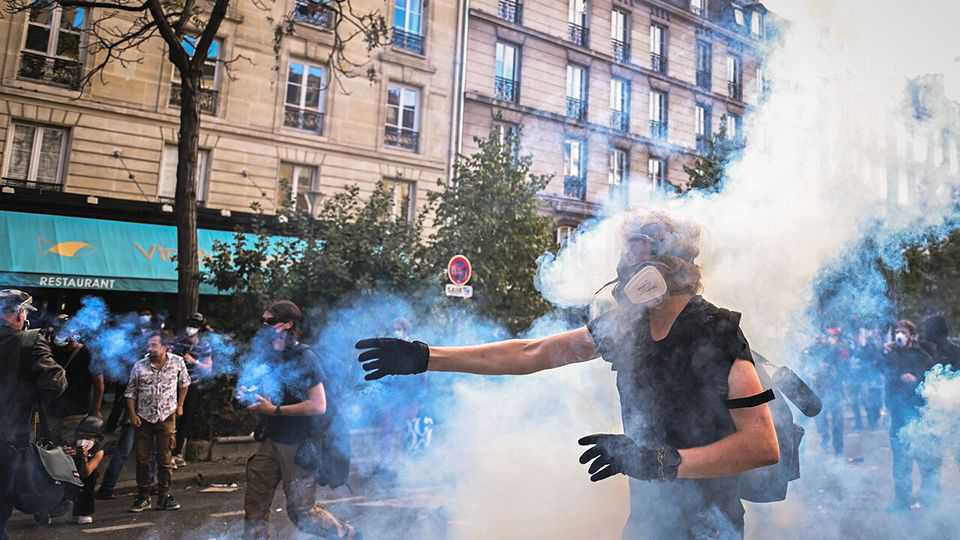
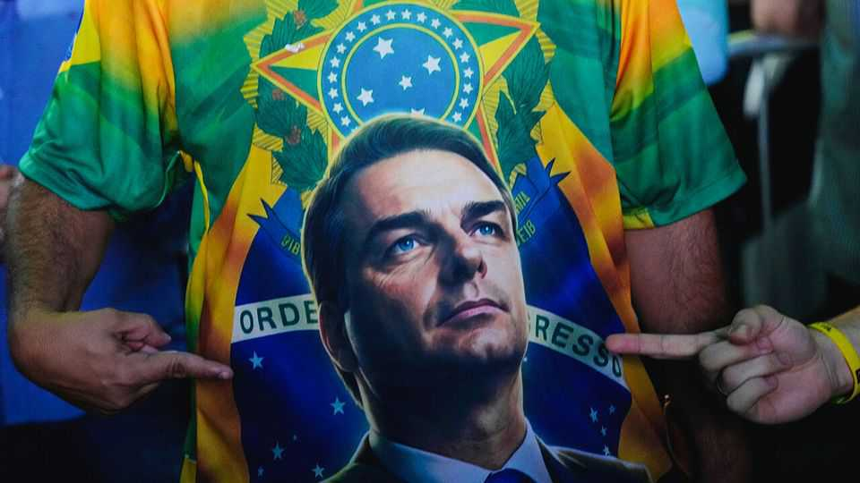

Politics

Oct 8th 2026
At least 250,000 demonstrators in France marched through Paris, Marseille, Lyon, Rennes, Toulouse and other cities, mainly to protest against a lack of investment in education. The protests, led by school pupils but joined by parents, teachers and unions as well as elements of the populist-left, have been building since mid-September, and are often accompanied by arson and vandalism. The police have responded with tear-gas and baton charges. Sébastien Lecornu, the prime minister, accused the populist-left of fuelling the violence. The protesters’ calls for more public investment come amid efforts by the government to control the budget deficit, and as bond markets punish France for its fiscal irresponsibility.
Spain has also seen significant protests, over housing, which were triggered by the eviction of an 87-year-old woman from her home by an investment fund, underscoring the high cost of renting in Spain. The woman has since died. The Socialist prime minister, Pedro Sánchez, has used the protests as a pretext to call a snap general election for November 29th. Mr Sánchez is seeking a progressive majority, but the left trails behind the conservatives in the opinion polls.
Meanwhile, the Spanish Supreme Court lifted the arrest warrant for Carles Puigdemont, the leader of the separatist movement in Catalonia, paving the way for his return from self-imposed exile. Mr Puigdemont fled to Belgium in 2017 after holding an illegal referendum on independence.
A former head of the BND, Germany’s foreign-intelligence service, was arrested for treason. August Hanning led the BND from 1998 to 2005 and was a security consultant after that. He is accused of collecting classified material, some of which was passed to an unnamed foreign power. Press reports say it was Azerbaijan; the country denies it. A former aide was charged with gathering the documents.
The Alternative for Germany (AfD) secured the role of speaker in Saxony-Anhalt’s legislature, a month after winning an election in the east German state. It is the first time a populist-right party has attained the speakership in a German state parliament since the second world war. The AfD is short of a majority, however, and it is unclear if it will be able to form a state government.
Russia’s bombardment of Ukraine continued unabated. At least 32 people were killed in a single day across the country, most of them in the town of Pryluky, 150km (93 miles) east of Kiev, where a Russian missile hit a residential building.
Rahul Gandhi, the leader of the opposition in India, was briefly detained during protests demanding the resignation of the head of the Election Commission. The commission is embroiled in a political scandal after tens of millions of voters were deleted from the electoral rolls, reportedly to the advantage of the ruling Bharatiya Janata Party. The commission says it merely removed duplicate or ineligible names.
In Japan the prime minister, Takaichi Sanae, lodged a complaint with the American government over the alleged murder of a Japanese woman in Okinawa by an American marine, which the marine denies. The American embassy said it was co-operating; marines have been put on a one-month curfew and banned from drinking alcohol for 48 hours. The presence of American troops in Okinawa has caused friction with locals in the past. In 1995 the rape of a 12-year-old girl by three marines led to angry protests calling for the troops to leave.
Min Aung Hlaing, who led a military coup against Myanmar’s elected government in 2021 and earlier this year had himself named president, visited Malaysia. Malaysia had previously been among the most vocal critics of the putsch. But Anwar Ibrahim, Malaysia’s prime minister, needs Min Aung Hlaing’s support to deport Myanmar refugees ahead of elections expected in Malaysia next year.
Pro-government forces in Yemen began a big offensive against the Houthi rebels, who are backed by Iran. They said they had “secured” Bab al-Mandab, a crucial waterway in the Red Sea, and captured the city of Mokha, with the support of Saudi air strikes. The Houthis denied losing control of the strait or Mokha and launched strikes on the airport in Riyadh, the Saudi capital, and elsewhere in the kingdom, killing at least three people. Turkey and Pakistan, which have signed a defence pact with a mutual-defence clause with the Saudis, agreed to deploy forces to Saudi Arabia.
An investigation led by the United Arab Emirates got under way into the co-pilot of a Flydubai plane who is suspected of trying to hijack it in order to carry out a terrorist attack against Israel. The co-pilot, said to be a citizen of Oman, is also being investigated in Australia, where he reportedly visited radical mosques while studying in the country, and New Zealand, where he spent some time in flight training.
Israel ordered the British consulate in Jerusalem to formally end its operations, part of the government’s retaliation against Britain for imposing sanctions on Israeli interests in the West Bank. But in a deal between the two countries the consulate will change its status to “UK Mission” and diplomats will be allowed to continue working there.
America withdrew all its B-1 bombers from Fairford air-force base in Britain, amid warnings of a potential terrorist attack on the facility. Reports suggest that Iran was using operatives in Britain to carry out a drone strike that would destroy the fleet of bombers, which America deploys from Fairford to target installations in Iran. British police have arrested several men, though the details of any actual plot remain murky.
Kenya confirmed its first death from Ebola. The patient had travelled to Kenya via Uganda from the Democratic Republic of Congo, the centre of the latest outbreak. Kenyan authorities said they had traced several dozen of the patient’s contacts and quarantined ten. More than 4,000 people have died of Ebola since Congo declared an epidemic in May.
The Ethiopian army captured Mekelle, the capital of the northern Tigray region, from forces loyal to the Tigray People’s Liberation Front, which governs the region, and expelled the group’s leaders. Fighting in Tigray, which erupted on September 23rd, may evolve into a wider regional war. Ethiopia and Eritrea have cut diplomatic relations and Eritrean forces are reported to have entered Tigray.

Confounding the pollsters who had him trailing in the polls for months, Flávio Bolsonaro took 47% of the vote in Brazil’s presidential election, ahead of Luiz Inácio Lula da Silva (or Lula), the left-wing incumbent, who took 45%. A run-off ballot will be held on October 25th. Mr Bolsonaro is in a strong position to win; other conservative candidates in the first round have endorsed him.
In Canada the separatist Parti Québécois won its first provincial election since 2012. With just 28% of the vote, the party took 59 seats in Quebec’s legislature, five short of a majority, and will form a minority administration. Paul St-Pierre Plamondon, the probable new premier, reiterated his commitment to hold a referendum seeking independence from Canada. He has also pledged to abolish the constitutional role of the British monarch in Quebec.
Lionel Messi, one of the greatest-ever footballers, played his last international match for Argentina, scoring a penalty in a 3-0 win against Benin. Mr Messi has been awarded the Ballon d'Or, the game’s most prestigious award, a record eight times and was on the World Cup winning Argentine team in 2022. At 39 most footballers would be long retired, but Mr Messi may be delighting fans for a few years yet, just not on the international stage.